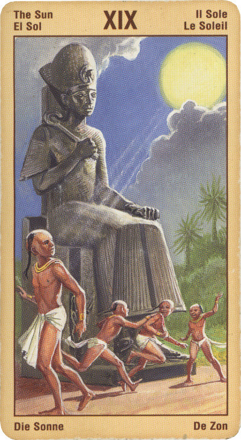

Солнце
Смысл карты: ты достиг высокого уровня сознания. Ты понял, в чем заключается твое предназначение, рассчитался с кармическим долгом и можешь теперь помочь другим в этом. Будь же добр к ним.
Прямое положение: материальное благополучие, удачный брак, довольство.
Значение: Солнце – одна из самых лучших карт в колоде. При ответе практически на любой вопрос она дает благоприятный ответ. Как правило, она говорит о хорошем здоровье (выздоровлении), благополучии детей, удаче в делах. Иногда подтверждает указание на рождение ребенка.
Если вы обнаружите эту карту в своем раскладе, то скорее всего, для вас начинается радостный и созидательный жизненный этап. Реализуемые вами проекты подходят к своему логическому завершению, ваш ясный ум и умение сосредотачивать свои усилия на достижении цели обеспечат им успех.
В перевернутом виде сохраняет свое значение, разве что указывая на легкое облачко, набежавшее на Солнце; но это облачко скоро рассеется.
И, потому что Солнце обходит небесный круг за год, эта карта может указывать на период времени продолжительностью один год.
Для бизнесменов, как ни странно, ничего хорошего, разве что если они вкладывают деньги в фармакологию или в образование, хоть начальное, хоть высшее. Если нет, то им лично ничего не грозит, однако их бизнес будет испытывать затруднения из-за политики государства.
Иногда наше обаяние или способности могут ослеплять нас, а присущий нам блеск, вместо того, чтобы служить нам, становится помехой. Ясность и трезвость ума, которые несет с собой карта Солнца, могут быть затуманены, и вы можете ощутить на себе недостаток этих качеств. Также эта карта может свидетельствовать о неудаче, причем не из-за того, что вам не хватает тех или иных качеств, а из-за того, что вы слишком заняты собой и своей внешностью.
В перевернутом положении карта символизирует трудности в контактах с людьми, проблемы в браке и в партнерстве, недоразумения, ложные представления об успехе, излишнюю хлопотливость, активность, которая не дает результатов. Иногда перевернутая позиция предвещает проблемы со здоровьем, семейные хлопоты или временную разлуку с близким человеком.